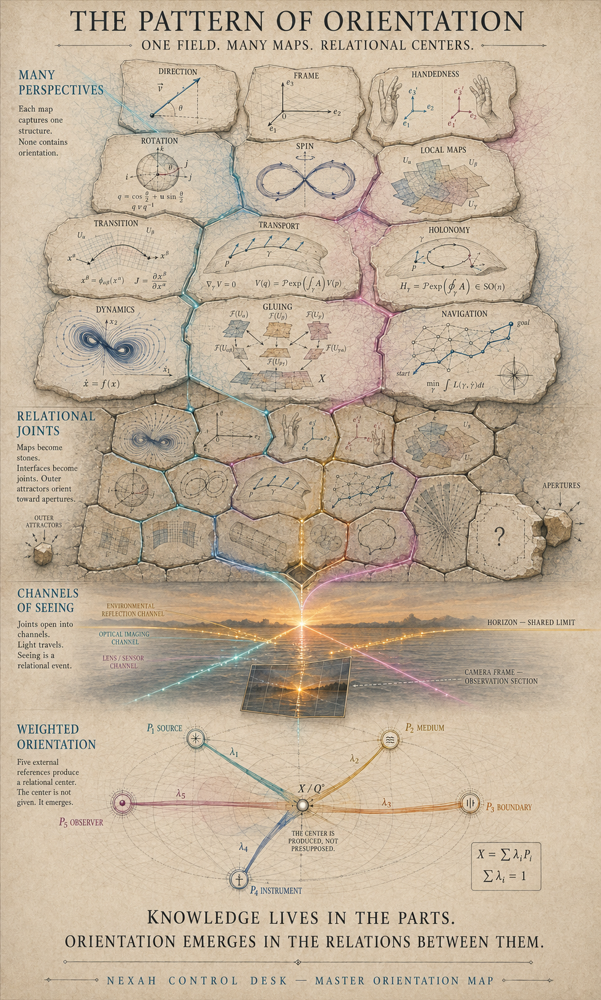

Fields
Lokale Wissensgebiete mit eigenen Gegenständen, Methoden, Einheiten und Evidenzformen.
Diese Karte verbindet mathematische Perspektiven, empirische Domänen, Beobachtung und Human Return. Sie behauptet nicht, dass diese Felder ein Mechanismus sind. Sie zeigt, welche Übersetzung erst deklariert werden muss, bevor ein Vergleich wissenschaftlich tragfähig werden kann.
Hier bleibt der Zusammenhang stehen: von den Wissensfeldern über die mathematische Werkstatt zum konkreten Operator und seinem Return. Die Ansichten öffnen im selben Raum; ihre Quellen und Werkzeuge bleiben erhalten.
Gesamtkarte: Felder, Perspektiven, Fugen-Builder und Ledger.
Wähle ein Feld. Rechts erscheint nicht seine Totaldefinition, sondern seine gegenwärtige A0-Fuge: Rolle, typische Übergänge und harte Nicht-Identität.
Die Karte wird erst belastbar, wenn Feld, Ansicht, Fuge und Return nicht ineinanderfallen.
Lokale Wissensgebiete mit eigenen Gegenständen, Methoden, Einheiten und Evidenzformen.
Repräsentationen, Koordinaten, Projektionen oder Readouts innerhalb und zwischen Feldern.
Deklarierte Schnitte, Maps, Vergleiche, Bindungen, Übersetzungen und Übergänge.
Was erhalten blieb, verloren ging, ergänzt wurde oder unaufgelöst bleiben muss.
J = (left object, right object, carriers, units, map, compatibility,
preserved, lost, added, residual, evidence, status, Return / STOP)Jede Tafel ist ein Ort, von dem aus ein Orientierungsproblem beschrieben werden kann. Wähle eine Perspektive für ihre begrenzte Rolle und Fugenfrage.
Rolle: Richtungsrecord. Fugenfrage: Was definiert Vorzeichen, Betrag und Umkehr?
Wähle zwei Felder und einen Fugentyp. Das Ergebnis ist kein Beweis, sondern die kleinste Checkliste, die vor einer wissenschaftlichen Verbindung ausgefüllt werden muss.
Der Status gehört zur Relation, nicht automatisch zu ihren Endpunkten. Zwei etablierte Felder können durch eine offene oder falsche Map verbunden sein.
Die hellen Pattern-Tafeln liefern die Feldkarte. Die dunklen Q°-Studien untersuchen Steuerung, Maske und Bindung. Ihre Herkunft bleibt sichtbar; ihr historischer Status wird nicht durch die HTML-Verbindung aufgewertet.

Source: 10 NEXAH CORE/NEXAH/docs/library/architecture-of-orientation-vol-iv/pattern-of-orientation/Mathematics, Masonry, Channels, Relational Center, Masterplate, River und Whip als konzeptuelle visuelle Synthese.
CONCEPTUAL_VISUAL_SYNTHESIS
Masterplate öffnen →Provenienz →Normalisierung und relationaler Kontrollwert innerhalb deklarierter Grenzen. Kein fünfter Quaternion-Anteil und kein physikalischer Universaloperator.
HISTORICAL_NONCANONICAL
Player öffnen →Current fragment →Rails, Masken und bewegliches Entscheidungsfenster. Verdeckter Inhalt bleibt ohne legitime Vollspur und Recovery-Regel unbekannt.
INCOMPLETE_NONCANONICAL
Player öffnen →Maps, Gewichtung, Binder-Gleichung, Konsistenz und Alignment. Jede Gleichung benötigt getypte Domänen und relationale Evidenz.
NONCANONICAL_SYNTHESIS
Player öffnen →Vollständige Textakte mit Feldern, Perspektivtafeln, Fugenrecord, Statussprache und Initial Ledger.
FIELD_NOTE_ATLAS
Markdown record →Owner placement →Legt fest, welche AXIOM-Bestandteile als begrenzte Fragen zurückkehren dürfen und welche in der privaten Archäologie verbleiben.
NO_NAVIGATOR_EFFECT
Routing record →Question candidate →Eine gute Fuge beweist nicht, dass zwei Felder dasselbe sind. Sie macht prüfbar, was zwischen ihnen übersetzt werden darf.